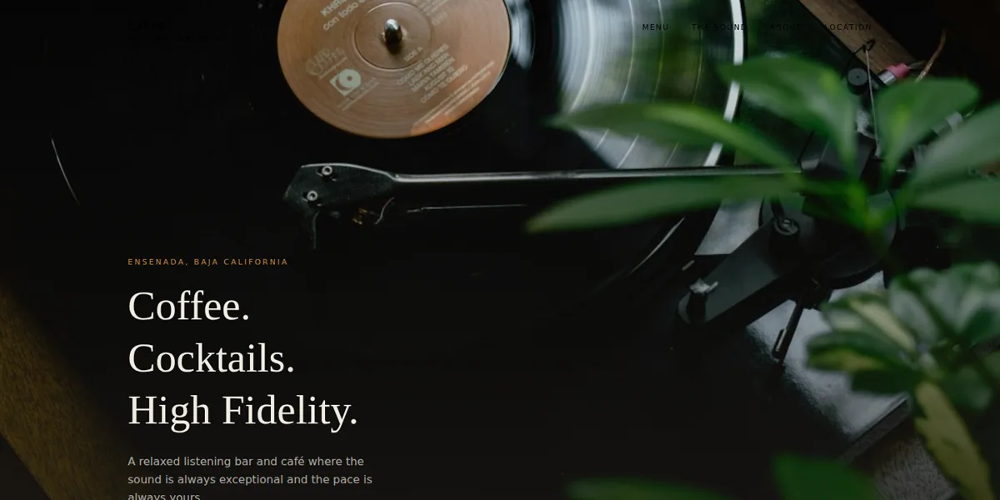
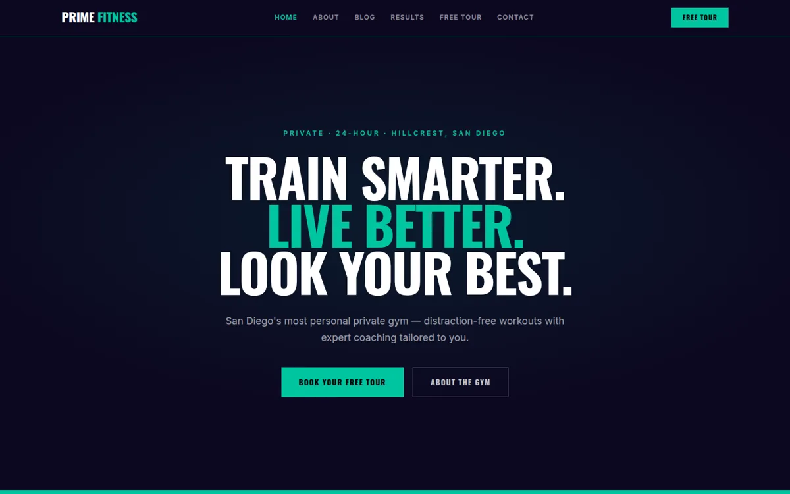
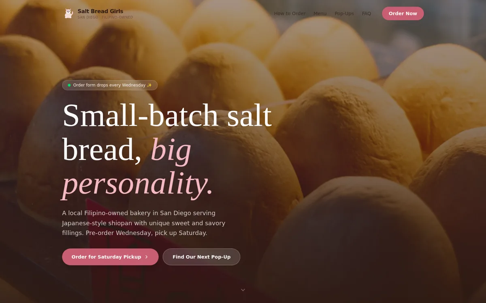
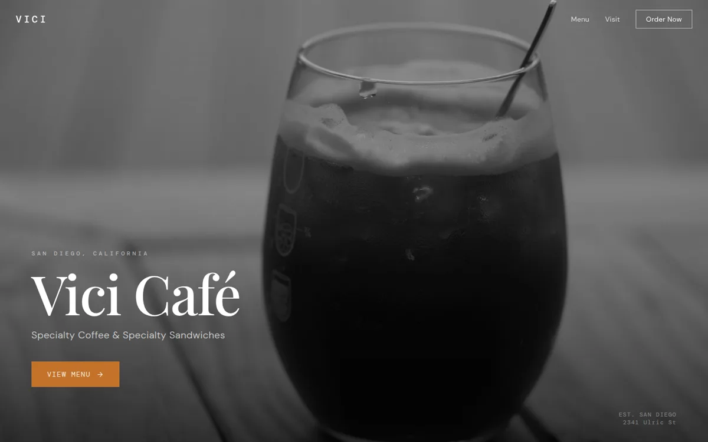
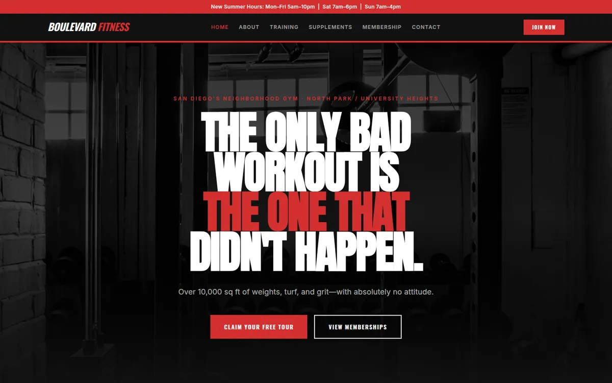
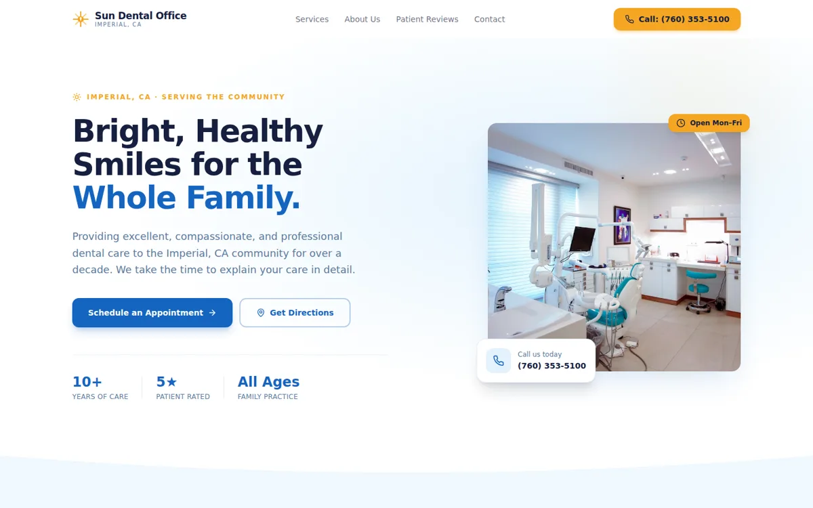
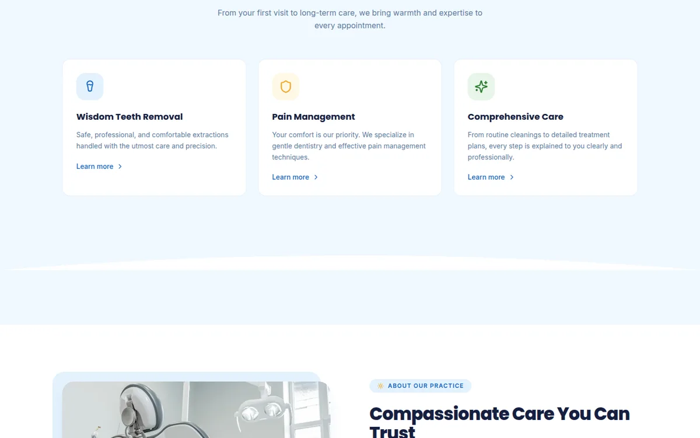
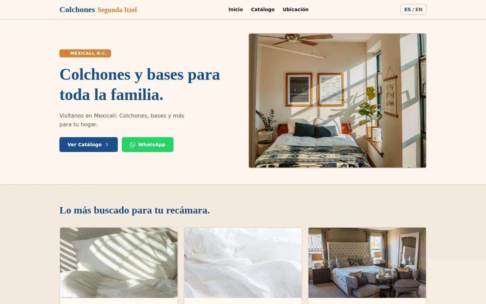
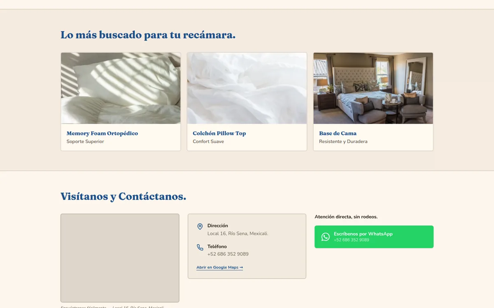

Computer systems · autonomous software · web & digital
Oscar Canizales
I’m Oscar — a San Diego–based computer engineer who builds systems that keep running when I’m not watching. The one I’m proudest of audits a client’s website every night, writes the fix itself, and refuses to ship it unless five independent checks pass. I also run quant research platforms, a self‑hosted VPS fleet, and a knowledge graph over my own codebases. By day I teach kids robotics at Brains and Motion and keep the schematics honest as a project‑space officer with IEEE at UC San Diego. I don’t trust a system until I’ve watched it break — which is why every one of these has a gate, a test suite, or both.
production
shipped
tests, green
to a live site
mobile & desktop
codebase question
note: counted from the repositories themselves, not estimated. Press ⌘K to search this site, ? for the keyboard map.
01 / EXPERIENCE
A little history.
Roles where uptime, documentation, and people all had to hold at once. Tap a row for detail.
Work
-
- Ran end-to-end technical operations, balancing client relationships with day-to-day system administration.
- Isolated hardware and network faults through systematic diagnostics, performing critical repairs to hold system uptime.
- Authored authoritative documentation of procedures and configurations for multi-user operations.
- Marketed IT services and secured contracts for hardware and network diagnostics.
-
- Instruct students in robotics and electrical principles, translating complex ideas into practical lessons.
- Guide hardware-prototyping workshops and mentor students through circuit troubleshooting.
- Manage laboratory inventory and logistics for engineering project materials.
-
- Oversee laboratory project-space infrastructure, maintaining component inventories and equipment availability for student projects.
- Provide technical guidance to peer engineers — schematic debugging and component selection.
-
- Design, build, and deploy commercial websites end to end — Figma through to a live domain on client hosting.
- Operate an ongoing SEO retainer for a live storefront, backed by a nightly audit pipeline I wrote and run myself.
- Produce client audits and proposals from a documented intake pipeline rather than one-off documents.
Learning & certifications
- 2024–28 UC San DiegoComputer Engineering — ADT transfer path
- 2025 QualcommAI Upskilling: Technical Foundations
- 2024 Calexico High SchoolCTE: Marketing, Sales & Services · Entrepreneurship
- — AlisonDiploma for Electrical Studies (verified)
02 / PROJECTS
Things I’ve built.
Systems I run, research platforms I trade on paper, and client sites I’ve shipped. Filter them, or open one for the full spec.
No projects in that category.
Autonomous systems & AI
-
Problem
SEO retainers fail in month seven, not month one — not because anyone runs out of ideas, but because nobody keeps doing the small unglamorous work every single night. I wanted a system that did the work on a schedule and could be trusted to touch a paying client’s live website without me reviewing every diff.
Approach
A Python pipeline that runs at 03:00 and resumes at 07:00. It crawls the live site, runs Lighthouse locally for mobile and desktop, appends one immutable row to an append-only metrics CSV, then picks the highest-value task off a backlog and writes the change in an isolated git worktree. Nothing publishes until a five-check gate passes, and the gate fails closed: anything it cannot evaluate counts as a failure, never a pass.
The five checks
- The build exits zero, and the task produced a diff at all.
- That diff touches only files on the task’s allowlist.
- The post-change audit shows no regression per page, keyed on path — site-wide averages let one page’s loss get paid for by another page’s gain, so they are not the unit of judgement.
- The built directory kept every file it had, and everything that was well-formed XML still is.
Results
- 4 code changes written and shipped to a live client site unattended — schema fixes, a sitemap lastmod, and a render-blocking font fix — 4/4 gate-passed, zero rollbacks.
- The site it maintains holds 100 Lighthouse SEO on mobile and desktop, with 100% meta completeness and alt coverage.
- 368 tests over the engine, including guards that refuse to render two YAML traps that would otherwise print garbage into a client’s proposal PDF.
- Same engine renders client audits and proposals to print-ready PDF from YAML.
Python 3.11 · Lighthouse · headless Chromium · Jinja2 · git worktrees · cron · Claude
-
Problem
A backtest that looks good on one slice of history tells you almost nothing. I wanted a platform where a strategy has to survive walk-forward validation before it is allowed near capital, and where the answer “this does not work” is a first-class result rather than a reason to keep tuning.
Approach
Ten strategies — MA crossover, opening-range breakout, an ORB retest variant, mean reversion, MACD-with-trend-filter, order-flow, gap reversion, and more — over CME futures (ES, NQ, GC) and equities. An optimizer searches each strategy’s parameters and the risk:reward and stop width jointly, maximizing risk-adjusted expectancy behind a minimum-trades floor and a max-drawdown cap. Brokers are pluggable behind one interface; paper is the default.
The committee memory loop
An LLM committee debates each setup, but the interesting half is that it is scored afterward. Verdicts are journaled as pending; five trading days later a second pass reads the real cached bars, computes the direction-adjusted move, and stores one short lesson per entry — which then gets injected into every future run. Ported from TradingAgents’ reflection design, rebuilt stdlib-only in plain markdown with no vector database.
Results
- Best validated combo: +0.72R per trade at a 2.55 profit factor on GOLD daily, walk-forward.
- An 8-year walk-forward flagged the statistical-arbitrage family as non-robust, so it was held to paper only — the platform earning its keep by saying no.
- 134 tests. The ORB retest runs live on paper against NQ.
- Committee runs weekday nights on a local model, at zero API cost.
Python · pandas · Rithmic / Lucid · Webull OpenAPI · Ollama · walk-forward optimization
-
Problem
The trading committee needed structured verdicts from a language model running locally on a CPU-only VPS — no GPU, no API budget. A 3-billion-parameter model asked politely for JSON returned prose, fences, and half-objects. Every one of those parsed to nothing, and the committee silently degraded to a dry run without saying so.
Approach
Rather than reaching for a larger model, I moved the constraint from the prompt into the decoder: a JSON schema enforced at generation time, so invalid tokens are never sampled in the first place. I also fixed the quieter bug behind it — the backend was requesting a model name that wasn’t served, 404ing, and falling back to dry-run without surfacing an error.
Results
- Verdict parse rate went from 0/4 to 4/4 on the same 3B model — a schema outperformed a parameter-count upgrade.
- The backend now auto-selects an installed model instead of failing invisibly.
- Standing rule that came out of it: never fake a verdict on a parse failure. A pipeline that reports success on no data is worse than one that stops.
- Runs at zero marginal cost on hardware I already pay for.
Ollama · llama3.2:3b · JSON-schema constrained decoding · Python
-
Problem
Answering “what breaks if I change this function” across a dozen repositories meant grepping and reading files until the answer appeared, which is slow for a person and expensive for a model. The information is a graph; searching it as flat text throws that structure away.
Approach
Built a pipeline that ingests code and documentation into a persistent graph — identifying god nodes, running community detection, and exposing query, path, and blast-radius operations. Rolled it out across the whole fleet and wired the refresh into a scheduled job so the graphs never go stale.
Results
- 8 repositories onboarded and kept current by a scheduled rebuild, at zero token cost.
- 3.8× less context per codebase question overall, and 7.2× on targeted queries.
- Blast-radius queries return the affected set directly — a 14-node impact analysis where the alternative was reading the repository.
Python · graph construction · community detection · scheduled indexing
-
Problem
Selling web design means finding businesses that don’t have a website yet — exactly the prospects that are hardest to surface by hand, because the usual way you find a business is by finding its website.
Approach
A FastAPI and SQLite service with a vanilla-JavaScript dashboard that pulls candidate businesses from Google Places, OpenStreetMap, and Reddit, merges them, and uses an LLM to identify and qualify the ones with no web presence. Runs self-hosted behind the fleet gateway.
Results
- Three independent sources merged into one deduplicated, qualified lead list.
- Outreach is prepped per lead, so contact time goes to real prospects.
- Feeds directly into the client intake pipeline — a qualified lead becomes a filed client without re-keying.
Python · FastAPI · SQLite · JavaScript · Google Places API · OpenStreetMap · Claude
Infrastructure & automation
-
Problem
I wanted always-on private services I fully own, and a real environment to learn cloud fundamentals rather than a sandbox that resets when I close the tab. Then the fleet grew past the point where I could remember which port was what.
Approach
A Linux VPS plus Raspberry Pi nodes running everything behind one dashboard I wrote: a single-file Python service that scans every project’s git state live, checks each port with a real TCP probe, and acts as an authenticated reverse-proxy gateway so one login reaches every UI. The box has no pip and no Node, so the dashboard is stdlib-only — zero dependencies, one file to audit.
Results
- Passwords stored as PBKDF2-SHA256 at 200k iterations with a per-user salt; sessions are HMAC-signed, HttpOnly, SameSite=Lax cookies. No plaintext secret is stored or committed.
- The proxy is allow-listed to known ports, so it cannot be turned into an arbitrary SSRF pivot — a deliberate constraint, not an oversight.
- Scheduled jobs handle backups, graph rebuilds, and the nightly SEO run; secrets are guarded by a pre-push hook.
- During a security pass I found and redacted a hardcoded Google API key in a test fixture, then swept the rest of the repositories to confirm it was the only one.
Linux · Python (stdlib only) · systemd · Docker · Raspberry Pi · cron · reverse proxy
-
Problem
I wanted the discovery experience of a streaming service over a library I actually own, with the phone as the only thing I ever touch.
Approach
Seven Dockerised services wired into a closed loop: plays scrobble out to ListenBrainz, recommendations come back, missing tracks are searched and fetched, metadata is corrected against MusicBrainz, and finished playlists appear on the phone. A separate PIN-protected request page lets other people add songs, which flow into the same pipeline on a schedule.
Results
- Listen → recommend → fetch → tag → playlist runs end to end with no manual step.
- Concurrent writers share one lock file, so the request page and the scheduled job can never corrupt each other’s playlist builds.
- A metadata repair pass verifies the actual audio before overwriting tags — suspect files are quarantined and requeued rather than silently mislabelled.
- 38 tests over the pipeline logic.
Docker · Plex · ListenBrainz / MusicBrainz · Python · systemd · file locking
-
Problem
Producing short-form clips by hand means sourcing footage, watching all of it, and cutting each segment before anything ships. Worse, an automated cutter that picks a window mechanically tends to open the clip on its least interesting second — which is the one second that decides whether anyone watches.
Approach
A Python pipeline: source download at a guaranteed 1080p, audio-spike analysis to locate highlights, then an ffmpeg pass that cuts to 9:16 with motion tracking and a facecam split-screen, and Whisper for captions. I later reworked the selection stage around a hook / progression / climax model so the clip opens on the peak instead of building to it.
Results
- Raw footage in, publish-ready vertical video out, with captions placed so they never cover faces or gameplay.
- Uploads stage as drafts only, to one authorized channel — automation that cannot publish on its own is automation you can leave running.
- Encoder pass tuned after profiling: dropped no-op scaler flags and rebalanced the preset for real throughput.
- 33 tests; CLI and web-app entry points share one worker.
Python · yt-dlp · ffmpeg · Whisper · Flask · YouTube Data API
-
Problem
Client work was scattered across email threads, PDFs, and notes, with no single place that knew who a client was or what had been promised. Proposals were hand-assembled documents, which is exactly how two clients end up with different versions of the same offer.
Approach
An upload page on the fleet dashboard hands the file to an intake module that files the raw document as an attachment, extracts its text into a generated note, and updates the client record and registry. From there a YAML file renders to a print-ready proposal PDF through the same templating and headless-Chromium path as the nightly audit report.
Results
- One command turns a client document into a filed, searchable, linked record.
- Proposals are generated from data, so the terms in the PDF are the terms in the system.
- Image uploads are filed, not read — there is no OCR on this box, and the note says so explicitly. An empty extraction that looks successful is how a client document silently becomes invisible.
- Prose guards fail the render on two YAML traps that raise nothing and print garbage into a client’s document, plus house style rules enforced in tests.
- Shipped a full 12-month engagement proposal through it end to end.
Python · Jinja2 · headless Chromium · YAML · Markdown vault
Digital marketing & web
-
Problem
A Mexicali mattress storefront needed a bilingual site that sells over WhatsApp, hosted on the shared cPanel plan the client already paid for — and it needed to stay healthy after launch, not decay quietly the way client sites do.
Approach
Designed in Figma, built as a Spanish-first bilingual site with an ES/EN toggle and WhatsApp ordering, and deployed to shared hosting through GitHub Actions over FTPS — cPanel dropped its Git integration, so Actions is the only real path. Then I pointed my own nightly SEO engine at it, making this the site that project [01] audits and edits.
Results
- Live at segundaitzel.mx, verified in Search Console, holding 100 Lighthouse SEO on mobile and desktop.
- Push-to-deploy: a merge reaches the client’s host with no manual upload.
- Structured data, sitemap, and font loading have all since been improved by the pipeline rather than by hand.
- Deployment traps documented so they can’t bite twice — an addon domain’s document root is not public_html, the FTPS server directory is login-relative, and a stray noindex survives a build if nothing checks for it.
React · Vite · Figma · GitHub Actions · FTPS · cPanel · Schema.org
-
Problem
RADCO Construction needed a commercial site that surfaced in local search instead of sitting invisible. I wanted the rebuild to earn organic traffic on its own rather than lean on paid placement.
Approach
Designed and deployed the site on WordPress with hand-tuned HTML/CSS, then reworked the site architecture and metadata around current SEO best practices. Wired in analytics to see what search actually rewarded.
Results
- Improved local search visibility through a cleaner site architecture and complete metadata.
- Structured the site to drive organic traffic rather than paid placement.
- Analytics in place to track search performance over time.
WordPress · HTML/CSS · SEO · Site architecture · Analytics
-
Problem
A family law practice needs its site to turn search traffic into consultations. I wanted pages that loaded fast, guided prospective clients to the right place, and captured inquiries without friction.
Approach
Developed and maintained the practice’s platform on WordPress at imperialfamilylaw.com, structuring navigation around the services prospective clients look for and tuning page performance and SEO. Wired secure lead-capture forms into the contact flow so inquiries reached the practice cleanly.
Results
- Live WordPress platform serving the practice at imperialfamilylaw.com.
- Secure lead-capture forms routing prospective-client inquiries to the firm.
- Navigation and page performance tuned for search visibility.
WordPress · HTML/CSS · SEO · Lead-capture forms
-
Problem
Design ideas stay cheap and ambiguous until someone can click through them. I wanted high-fidelity, interactive prototypes that showed exactly how a web app would look and behave before any code got written.
Approach
Built interactive UI/UX prototypes in Figma across two efforts. Inter-Amity was a comprehensive design system and layout — shared components and page structure meant to be reused rather than redrawn. Crane HIFI Bar was a set of responsive web layouts built around brand identity and the end-user experience, later coded out as a working build.
Results
- Inter-Amity: a comprehensive design system and layout defining shared components and page structure.
- Crane HIFI Bar: responsive web layouts focused on brand identity and user experience.
- Both delivered as high-fidelity, clickable prototypes — Crane went on to become the coded demo in section 04.

Figma · UI/UX design · Design systems · Prototyping
03 / SYSTEMS
How it all fits together.
Everything above runs on one box. Hover or focus a node to trace what feeds it and what it feeds — use ← → once a node has focus.
ingest: market data · Google Places / OSM / Reddit · live client sites · ListenBrainz
run: seo-ops · apex-trader · polymarket-bot · leadscout · shorts-clipper · music-stack · Ollama · graphify
ship: segundaitzel.mx · dashboard :8080 · Obsidian vault · YouTube drafts · Plexamp
Select a node for its detail.
04 / DEMOS
Demo builds.
Working websites I’ve designed and built end to end — every card opens a live build, served straight from this site. Two of the briefs carry a second concept: same client, two different directions. stack: React · Tailwind CSS · Vite.

01Crane HIFI Baropen demo ↗ Listening bar & café, Ensenada B.C. — the coded build of the Crane concept prototyped in Figma (project [13])
02Prime Fitnessopen demo ↗ Private 24-hour gym, San Diego — multi-page: memberships, training, blog, free tour
03Salt Bread Girlsopen demo ↗ Filipino-owned bakery, San Diego — Japanese shiopan; menu, pre-order flow, pop-ups, FAQ
04Vici Caféopen demo ↗ Specialty coffee & sandwiches, San Diego — menu, hours, and visit info
05Boulevard Fitnessopen demo ↗ Neighborhood gym, North Park San Diego — training, memberships, kids programs, supplements
06Sun Dental Office — Aopen demo ↗ Dental practice, Imperial CA — landing page: services, reviews, contact + map
07Sun Dental Office — Bopen demo ↗ Second concept for the same practice — expanded full-site build, its own visual system
08Colchones Segunda Itzel — Aopen demo ↗ Mattress store, Mexicali B.C. — the concept that shipped; now live at segundaitzel.mx (project [10])
09Colchones Segunda Itzel — Bopen demo ↗ Second concept for the same storefront — alternate type, photography, and catalog treatment05 / STACK
The tools I reach for.
Hover a skill to see which projects it shows up in — or click one to pin it.
Languages
Systems & infrastructure
AI, LLM & automation
Quantitative & data
Digital marketing & web
Hardware & EDA
06 / CONTACT
Work with me.
I’m open to roles and collaborations in computer systems, cloud infrastructure, and web & digital work. If you’ve got a system that needs building — or one that keeps falling over — I’d love to hear about it.